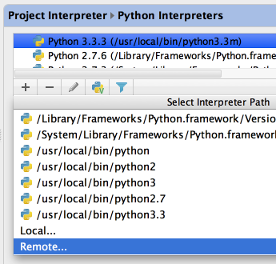

Found yourself in a situation, when you want to use an interpreter located remotely? With PyCharm it is quite easy.
To configure a remote interpreter, press &shortcut:ShowSettings;, and under the Project Settings. open the page Python Interpreters.
Then press &shortcut:NewElement;, and choose the option Remote:

You can use this remote interpreter for your project, or just leave it as one of the available interpreters.